Next: Quaternions and rotations.
Up: Theory and implementation
Previous: Theory and implementation
Contents
We consider a given time frame in which the atomic positions of a (sub)molecule are
given by
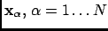. The corresponding positions in the reference structure are denoted as
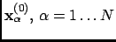. For both the given structure and the reference structure we introduce the yet
undetermined centroids and 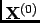, respectively, and define the deviation
Here
 is a rotation matrix which depends on also yet undetermined angular coordinates which we chose to
be quaternion parameters, abbreviated as vector
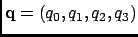. The quaternion parameters fulfill the
normalization condition
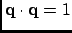 [56]. The target function to be minimized is now defined as
is a rotation matrix which depends on also yet undetermined angular coordinates which we chose to
be quaternion parameters, abbreviated as vector
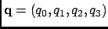. The quaternion parameters fulfill the
normalization condition
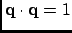 [56]. The target function to be minimized is now defined as
where 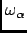 are atomic weights (see Section 4.2.1). The minimization with respect to the centroids
is decoupled from the minimization with respect to the quaternion parameters and yields
| 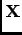 |
 |
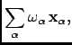 |
(4.47) |
| 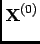 |
|
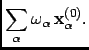 |
(4.48) |
We are now left with a minimization problem for the rotational part which can be written as
The relative position vectors
| 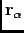 |
|
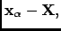 |
(4.50) |
| 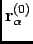 |
|
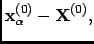 |
(4.51) |
are fixed and the rotation matrix reads [56]
Next: Quaternions and rotations.
Up: Theory and implementation
Previous: Theory and implementation
Contents
pellegrini eric
2009-10-06